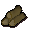
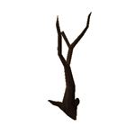
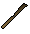
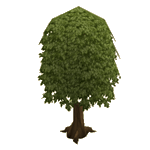
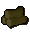
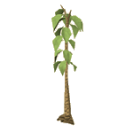
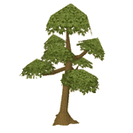
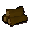

")
Woodcutting - Vegetation Types
Types of Vegetation
There are different types of vegetation within the world of RuneScape and not all of them can be chopped down using a hatchet. Some will need to be trimmed back with machetes. You will receive logs, bark or a thatching spar when you have successfully cut down a tree or jungle growth.
To cut down the teak or mahogany trees on Karamja you will need to earn trading sticks. This can be done in Tai Bwo Wannai Clean-Up.
Vegetation |
Level Required |
Members' Tree |
Cut With |
Image of Log/Bark/Spar |
Members' Item |
Experience Gained |
Location |
![[image]](../../img/main/kbase/items/trees/normal_tree.gif) Normal tree |
1 |
No | Hatchet | ![[image]](../../img/main/kbase/items/logs/normal_logs.gif) Logs Logs |
No | 25 | Throughout RuneScape |
![[image]](../../img/main/kbase/items/trees/evergreen_tree.gif) Evergreen tree |
1 |
No | Hatchet | Logs |
No | 25 | Throughout RuneScape |
![[image]](../../img/main/kbase/items/trees/achey_tree.gif) Achey tree |
1 |
Yes | Hatchet | Achey logs | Yes | 25 | East of the Feldip Hills |
|  Dead tree |
1 |
No | Hatchet | Logs |
No | 25 | Wilderness Goblin Village |
![[image]](../../img/main/kbase/items/trees/light_jungle.gif) Light jungle |
10 |
Yes | Machete | Thatch spar light | Yes | 32 | Karamja, around Tai Bwo Wannai |
|  Oak tree |
15 |
No | Hatchet | ![[image]](../../img/main/kbase/items/logs/oak_logs.gif) Oak logs Oak logs |
No | 37.5 | Draynor Village South of Varrock |
![[image]](../../img/main/kbase/items/trees/medium_jungle.gif) Medium jungle |
20 |
Yes | Machete | ![[image]](../../img/main/kbase/items/logs/medium_spar.gif) Thatch spar med Thatch spar med |
Yes | 55 | Karamja, around Tai Bwo Wannai |
![[image]](../../img/main/kbase/items/trees/willow1.gif) Willow tree |
30 |
No | Hatchet | Willow logs | No | 67.5 | Can be found by water. North-east of Lumbridge Castle South-west of Draynor Village bank North of Seers' Village bank |
![[image]](../../img/main/kbase/items/trees/dense_jungle.gif) Dense jungle |
35 |
Yes | Machete | ![[image]](../../img/main/kbase/items/logs/dense_spar.gif) Thatch spar dense Thatch spar dense |
Yes | 80 | Karamja, around Tai Bwo Wannai |
|  Teak tree |
35 |
Yes | Hatchet | ![[image]](../../img/main/kbase/items/logs/teak_logs.gif) Teak logs Teak logs |
Yes | 85 | Karamja, around Tai Bwo Wannai |
![[image]](../../img/main/kbase/items/trees/maple.gif) Maple tree |
45 |
Yes | Hatchet | ![[image]](../../img/main/kbase/items/logs/maple_logs.gif) Maple logs Maple logs |
No | 100 | Maples are not found on Free Worlds North of Seers' Village bank West of the Legends' Guild North of McGrubor's Wood, above the Farming patch North of Seers' Village, west of Sinclair Mansion |
![[image]](../../img/main/kbase/items/trees/hollow_tree.gif) Hollow tree |
45 |
Yes | Hatchet | ![[image]](../../img/main/kbase/items/logs/hollow_bark.gif) Hollow bark Hollow bark |
Yes | 82.5/357.7* | Mort Myre Swamp, between Canifis and the Hollows |
![[image]](../../img/main/kbase/items/trees/mahogany.gif) Mahogany tree |
50 |
Yes | Hatchet | ![[image]](../../img/main/kbase/items/logs/mahogany_logs.gif) Mahogany logs Mahogany logs |
Yes | 125 | Karamja, north-east of Tai Bwo Wannai |
![[image]](../../img/main/kbase/items/trees/arctic_pine.gif) Arctic pine |
54 |
Yes | Hatchet | ![[image]](../../img/main/kbase/items/logs/arctic_pine.gif) Arctic pine logs Arctic pine logs |
Yes | 140.2 | Neitiznot |
![[image]](../../img/main/kbase/items/trees/eucalyptus.gif) Eucalyptus |
58 |
Yes | Hatchet | ![[image]](../../img/main/kbase/items/logs/eucalyptus_logs.gif) Eucalyptus logs Eucalyptus logs |
Yes | 165 | Oo'glog |
|  Yew tree |
60 |
No | Hatchet | Yew logs | No | 175 | North of Varrock Palace South of Falador North of Rimmington South of Edgeville bank Between Draynor Village and Lumbridge In the cemetery in Seers' Village West of Catherby, south of the beehives South-east corner of Tree Gnome Stronghold Outside the altar in Varrock |
![[image]](../../img/main/kbase/items/trees/ivy.gif) Ivy |
68 |
Yes | Hatchet | None | N/A | 332.5 | North wall of Varrock Palace South-east outer wall of Varrock Palace North side of the north wall of Falador South side of the south wall of Falador South-east of Taverley East wall of East Ardougne church North side of the north wall of Yanille South wall of Castle Wars |
![[image]](../../img/main/kbase/items/trees/magic_tree.gif) Magic tree |
75 |
Yes | Hatchet | ![[image]](../../img/main/kbase/items/logs/magic_logs2.gif) Magic logs Magic logs |
Yes | 250 | South of Seers' Village South of the Sorcerer's Tower Tree Gnome stronghold On east side of the Mage Training Arena South-west of Lletya |
* A successful cut on a hollow tree will net 82.5 Woodcutting xp. If you receive a piece of bark with your cut, you will instead receive 357.7 Woodcutting xp.
Click here to view the Woodcutting FAQs

More articles in
Woodcutting
|
|
|
Further Help
If this article does not help you, you may find the following sections of the RuneScape site helpful:
|
|